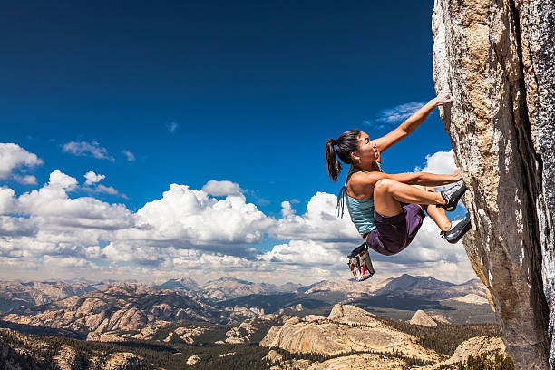
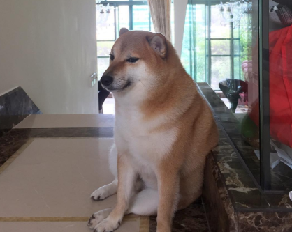

Eventos

Festival da Mata Atlântica
Data: Maio (Mês da Mata Atlântica)
Local: Parque Natural Montanhas de Teresópolis
Tema: Valorizar a biodiversidade e os povos que cuidam da floresta

Semana da Montanha & Natureza Viva
Data: 7 a 13 de setembro de 2025
Local: PARNASO + áreas de apoio no centro
Tema: Montanhismo, ecoturismo e preservação ambiental

Noite nas Estrelas
Data sugerida: Sábado de lua nova
Local: Gramado do PARNASO (Teresópolis)
Tema: Astronomia e conexão com a natureza noturna

Teatro na Floresta – Natureza Encena
Data sugerida:Fins de semana alternados (projeto contínuo)
Local:Clareiras e espaços abertos nos parques
Tema:O Monstro da floresta

Desafio Vertical – Mini Festival de Escalada e Aventura
Data sugerida: 05 de agosto
Local:Áreas de escalada no parque(Pedra do sino)
Tema:Desafios da pedra do sino

PetDay na Natureza – Traga Seu Amigo de 4 Patas!
Data sugerida:Sábado:10 de setembro
Local:Trilha suspensa e área gramada do PARNASO
Tema:Caminhada, Cuidado e Amor: Celebrando a Vida ao Ar Livre com Pets